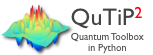

Scientific computing projects
 QuTiP is an open-source python framework for simulating the dynamics of quantum systems. QuTiP is based on the excellent Numpy and Scipy numerical packages, and graphical output is provided by Matplotlib. QuTiP aims to provide user-friendly and efficient numerical simulations of a wide variety of quantum mechanical problems commonly found in physics applications in fields such as quantum optics, trapped ions, superconducting circuits, and quantum nanomechanical resonators.
More information and documentation is available at the QuTiP web page, and at the QuTiP github repositories.
 wavefunction
is a Python package for calculating wavefunctions, energy levels, transition rates, etc., for 1 and 2 dimensional potentials. It includes examples for the harmonic oscillator, flux and current bias phase qubits, the Morse potential, and Flux qubits.
wavefunction
is a Python package for calculating wavefunctions, energy levels, transition rates, etc., for 1 and 2 dimensional potentials. It includes examples for the harmonic oscillator, flux and current bias phase qubits, the Morse potential, and Flux qubits.
More information and documentation is available at the github repository.
IPython extensions
Various extensions for use with the IPython notebook.- version_information: An IPython extension for showing version information for dependency modules. See the example notebook for installation and usage instructions.
- ipython-circuitikz: An IPython extension for generating and displaying electrical circuit diagrams in the IPython notebook, using LaTeX and the CircuiTikz package. There is an example notebook with installation and usage instructions.
- ipython-asymptote: An IPython extension for generating and displaying scientific figures in the IPython notebook, using the Asymptote vector graphics language. See the example notebook for details.
Lectures on QuTiP
A series of computationally-oriented lectures on quantum mechanics and quantum optics using QuTiP and iPython notebooks, with
lectures on the following topics:
- QuTiP overview
- Lecture-0 Introduction to QuTiP
- Lecture-1 Jaynes-Cumming model
- Lecture-2A Cavity-Qubit Gates
- Lecture-2B Single-Atom Lasing
- Lecture-3A Dicke model
- Lecture-3B Jaynes-Cumming with ultrastrong coupling
- Lecture-4 Correlation Functions
- Lecture-5 Parametric Amplifier
- Lecture-6 Quantum Monte Carlo Trajectories
- Lecture-7 iSWAP gate
- Lecture-8 Adiabatic quantum computing
- Lecture-9 Squeezed states of an harmonic oscillator
- Lecture-10 cQED in the dispersive regime
- Lecture-11 Superconducting charge qubits
- Lecture-12 Decay into a squeezed vacuum field
- Lecture-14 Kerr nonlinearities
- Lecture-15 Nonclassically driven atoms
The notebooks can be downloaded from the github repository, as a ZIP archive, or viewed online (read-only) using the links above.
Wavefunction notebooks
IPython notebooks with examples for the
wavefunction python package.
More examples are available in the
github repository.
Lectures on scientific computing with Python
A series of lectures on scientific computing using python. The lectures are written as IPython notebooks, which means that you can interactively edit and run the code. Download the notebooks from the github repository, or browse them online (read-only) using the these links:
- Lecture-0 Scientific Computing with Python
- Lecture-1 Introduction to Python Programming
- Lecture-2 Numpy - multidimensional data arrays
- Lecture-3 Scipy - Library of scientific algorithms
- Lecture-4 Matplotlib - 2D and 3D plotting
- Lecture-5 Sympy - Symbolic algebra
- Lecture-6A Fortran and C integration
- Lecture-6B HPC
- Lecture-7 Revision Control Software
Or download the ZIP archive with all the notebooks.
Reproduced papers
A collection of IPython notebooks with reproduced numerical results (to varying degree of detail) for some interesting
papers. The notebooks are available for download at the
github repository, and
can be previewed online using the following links: